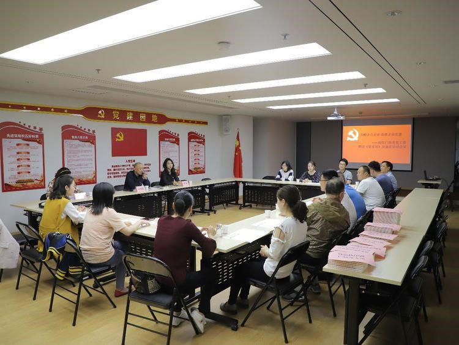
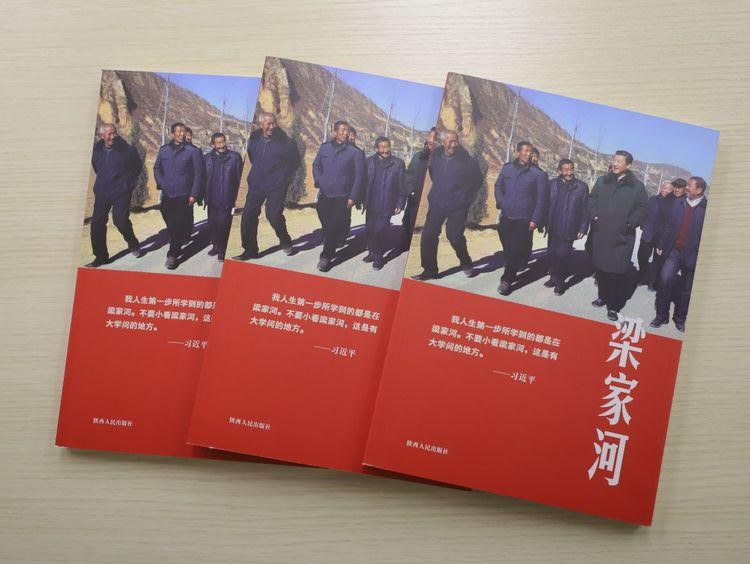
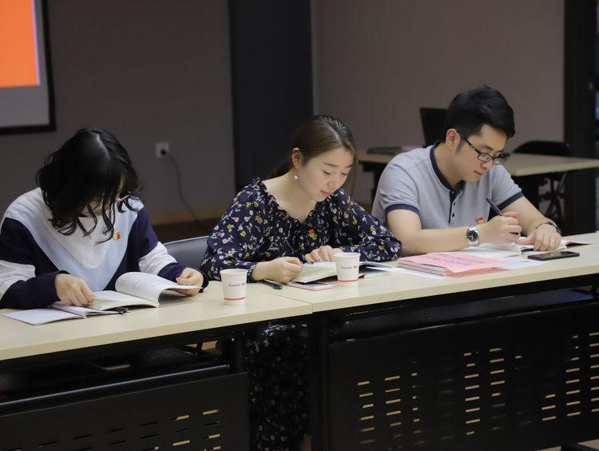
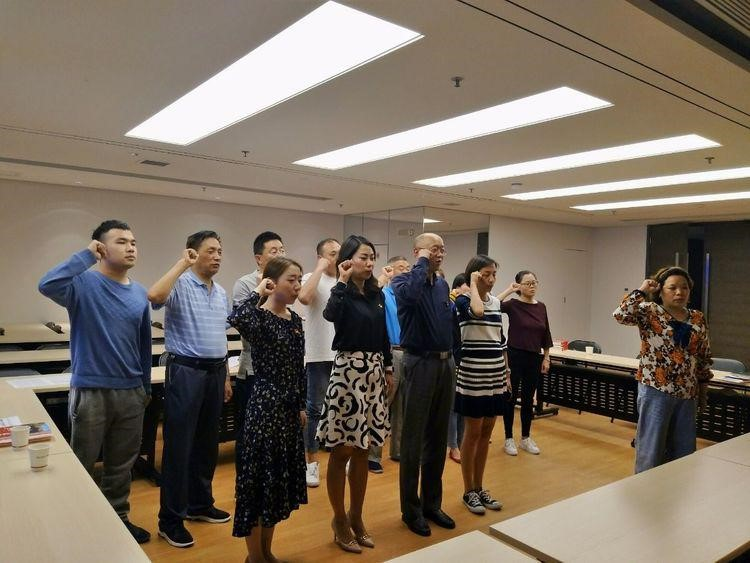

为了增强辖区非公企业党员的党性修养，推进非公企业党建工作，5月24日下午，碑林区南院门街道党工委在陕西万盛达信息科技有限公司党员活动室举行“书赠非公企业、助推企业党建”活动。南院门街道党工委书记杜国荣、陕西万盛达信息科技有限公司事业保障部总经理周丽、钟鼓楼印刷广场、西安秦唐一号中国餐厅、西安古城置业投资有限责任公司、陕西亿丰建设工程有限公司等八家非公企业党支部书记出席会议，南院门街道党办、党建办、文宣办工作人员参加会议。

南院门街道党工委书记杜国荣同志分别为八家非公企业赠送纪实文学书籍《梁家河》五十余本并带领大家接力诵读。参会二十余人分别节选深情朗读《我把心留在了这里》、《乡亲们过上了好日子，他舒心地笑了》、《近平和我们心贴着心》、《陕北的孩子》、《家家户户过上了好光景》等片段。此次赠书及诵读活动让全体党员深刻领悟习总书记为民造福的初心、追求真理的精神、埋头苦干的作风、攻坚克难的意志、复兴民族的梦想，增进全体党员对习近平新时代中国特色社会主义思想的理解。党员们纷纷表示，要多学习多阅读，锤炼党性、提升素质，坚持把学习作为一种生活态度、工作责任，助推企业良性持续发展。
梁家河，一个有“大学问”的地方，此次活动，为全体党员指明了方向，要回望过去，展望未来，始终牢记“幸福都是奋斗出来的”，干事创业，紧紧跟随习总书记的步伐，走好属于我们的“梁家河”。坚持以“敢教日月换新天”的奋斗精神战天斗地，加快推进南院门追赶超越目标更上新台阶。

南院门街道党工委书记杜国荣为陕西万盛达信息科技有限公司赠书

认真学习诵读《梁家河》

碑林区南院门街道党工委赠送《梁家河》及诵读活动